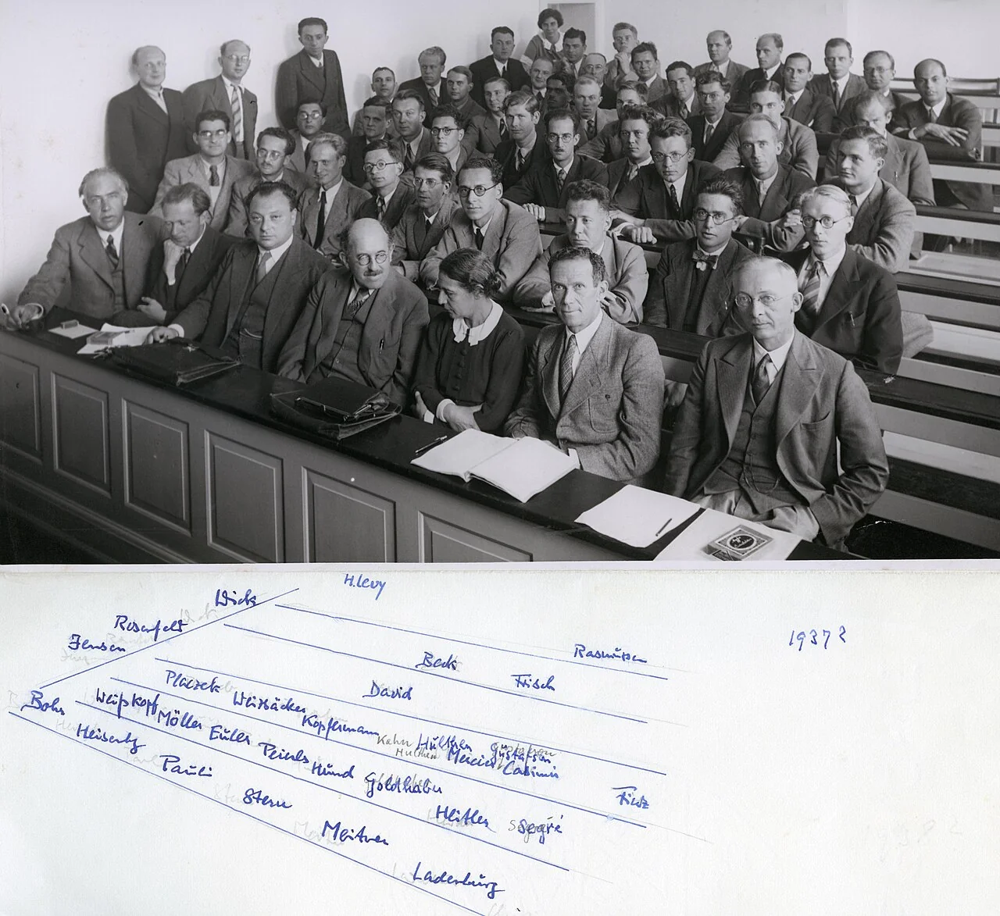
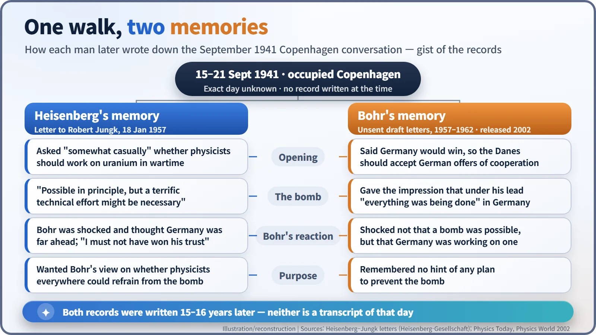
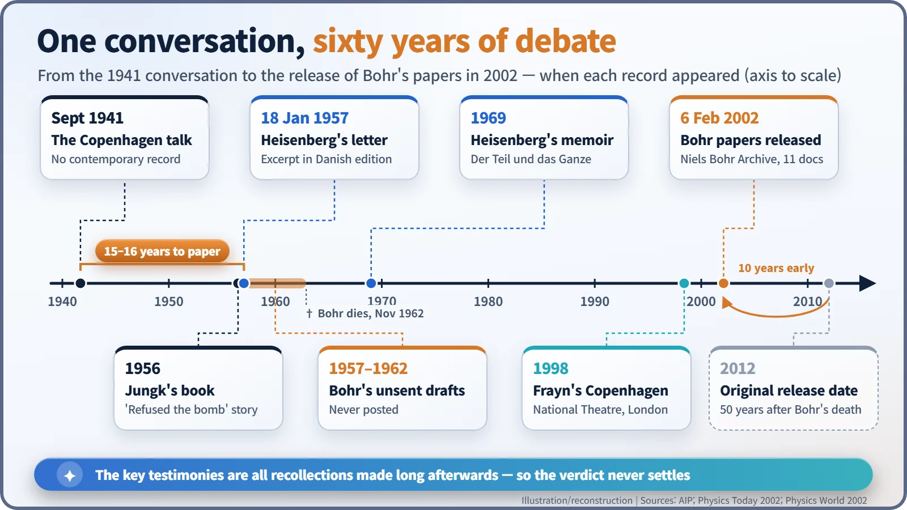
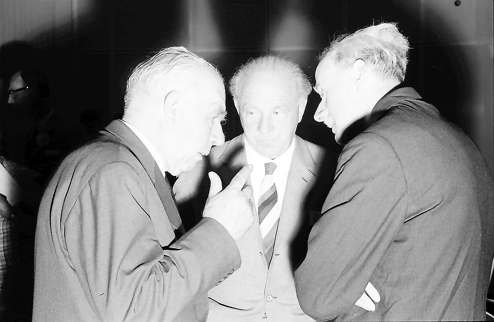

Nuclear History · 099
One Walk, Two Memories — Heisenberg Meets Bohr in Occupied Copenhagen (September 1941)
A short wartime conversation about atomic bombs left no record, and the two physicists later remembered it in strikingly different ways.
In September 1941 Werner Heisenberg, a leading figure in Germany's uranium research, visited his old mentor Niels Bohr in occupied Copenhagen. Their short conversation touched on atomic bombs and left Bohr deeply shaken. Neither man wrote it down at the time, and their later accounts, Heisenberg's 1957 letter and Bohr's unsent drafts released in 2002, still do not agree.
A play that keeps asking one question
London, 1998. On a bare stage at the National Theatre, three people who are already dead meet again: the Danish physicist Niels Bohr (1885–1962), his wife Margrethe, and the German physicist Werner Heisenberg (1901–1976). They replay the same evening over and over, each time asking one question: why did he come to Copenhagen? This is Michael Frayn's play Copenhagen. The question is not stage fiction. Historians have been writing and rewriting their own "drafts" of the answer for more than half a century. [1]
A guest from the enemy side
The two men had once been close to master and pupil. From 1924 Heisenberg worked in Copenhagen at Bohr's institute, and together they helped build quantum mechanics. By September 1941 the world had changed. Denmark had been occupied by Germany since April 1940, German armies that had invaded the Soviet Union in June were driving on Moscow, and the United States was still neutral.
Heisenberg had spent two years at the heart of Germany's wartime uranium research. His official reason for travelling was a lecture at an astrophysics meeting organised by the German cultural institute in Copenhagen, a body set up by the German Foreign Ministry after the occupation, which Bohr boycotted. His colleague Carl Friedrich von Weizsäcker (1912–2007) came too. Heisenberg was 39; Bohr was 55. [6]

A short conversation, and no record
During the week of 15–21 September the two met several times: in Bohr's room at the institute, at Bohr's home, and on an evening walk. Nobody knows on which day the crucial conversation took place, and nobody wrote it down at the time. What is certain is that the talk touched on atomic bombs, and that Bohr, deeply disturbed, cut it short. [1] [6]
There is a surprising footnote. According to a letter Heisenberg wrote to his wife before leaving Copenhagen, two days after that conversation he spent an evening at Bohr's home, talked physics, played the piano, and listened while Bohr read aloud. That is not quite the dramatic "night the friendship ended" of popular retellings. [6]
What Heisenberg remembered
The public argument began with a book: Heller als tausend Sonnen (1956) by the journalist Robert Jungk, published in English in 1958 as Brighter than a Thousand Suns. It left readers with the impression that German scientists had refused, on moral grounds, to build Hitler a bomb.
On 18 January 1957 Heisenberg wrote to Jungk with his own recollection. On an evening walk near Ny Carlsberg, he said, "the conversation probably started by me asking somewhat casually whether it were justifiable that physicists" should devote themselves to the uranium problem in wartime. Bohr asked back: "Do you really believe one can utilize Uranium fission for the construction of weapons?" Heisenberg recalled answering: "I know that this is possible in principle, but a terrific technical effort might be necessary." Bohr, he thought, took this to mean Germany was far ahead, and "I must not have wholly succeeded in winning Bohr's trust." [4]
Two details are worth noticing. In an earlier letter to Jungk (17 November 1956), Heisenberg asked not to be portrayed as a resistance fighter: "I do not wish to have this remark misconstrued to imply that I myself have been in a resistance move against Hitler." And in the January letter he placed the visit "about the end of October", when it was actually September. Sixteen years leave their marks on any memory. [4]
The letters Bohr never sent
When the Danish edition of Jungk's book appeared in 1957, carrying an excerpt from Heisenberg's letter, Bohr wrote a reply. He never posted it. Until his death in 1962 he drafted further versions, and none of them was sent.
The tone is courteous, the content firm. "I am greatly amazed to see how much your memory has deceived you," the draft begins. Bohr insisted, "I remember every word of our conversations, which took place against a background of extreme sorrow and tension for us here in Denmark." In his account, Heisenberg was confident of a German victory and thought it foolish for the Danes to rebuff "German offers of cooperation". Heisenberg gave the impression that under his leadership "everything was being done in Germany to develop atomic weapons", and said he had spent the past two years working almost exclusively on the question. Bohr recalled no hint that German physicists meant to prevent a bomb. What shocked him, he wrote, was not that a bomb was possible, but that Germany was working on one. [2] [3]

| Record | Written | Years after the talk | Status |
|---|---|---|---|
| Heisenberg's letter to Jungk | 18 Jan 1957 | about 15 | Excerpt printed in 1957 |
| Bohr's draft replies | 1957–1962 | 16–21 | Never sent; released 2002 |
| Heisenberg's memoir Der Teil und das Ganze | 1969 | 28 | Published |
6 February 2002: the seal is broken
Bohr's family had intended to keep these papers sealed until 2012, fifty years after his death. As speculation grew, the Niels Bohr Archive released 11 documents on 6 February 2002, ten years early, "to avoid possible misunderstandings regarding their contents." [2] [5]
Many newspapers reported that Bohr's drafts demolished Heisenberg's version. The archive's director, Finn Aaserud, urged caution from the start: "All the documents were written sixteen years or more after the event they seek to describe." Some historians argue that the two memories do not so much contradict each other as record different parts of the conversation: Heisenberg remembered the question he wanted to ask, and Bohr remembered the alarming things he actually heard. Others see the visit as driven by fear that American atomic bombs might one day fall on Germany. None of these readings rests on decisive evidence. [3] [6]

Living with an uncertain past
What happened next is clear. In 1942 Germany's leadership concluded that a bomb could not be built in time to matter in the war and did not invest in it on a large scale. Bohr escaped to Sweden in 1943, went on to Britain and the United States, and only then learned of the Allied bomb project. [3]
The friendship did not end either. The families visited one another after the war, and in June 1962 the two men stood side by side at the Lindau meeting of Nobel laureates, five months before Bohr's death.

Was Heisenberg a quiet hero or the would-be architect of a Nazi bomb? The surviving evidence does not let us say for certain. Two men walked the same streets and remembered different conversations, and history can only set the two memories side by side. For the man who gave physics its uncertainty principle, it is perhaps a fitting ending.